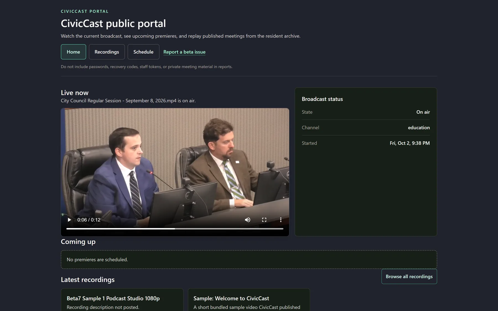
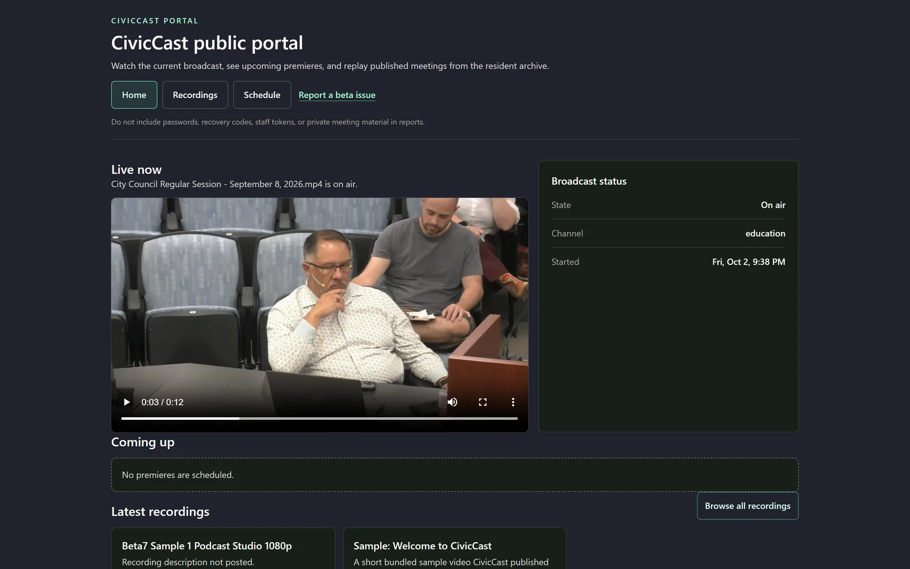
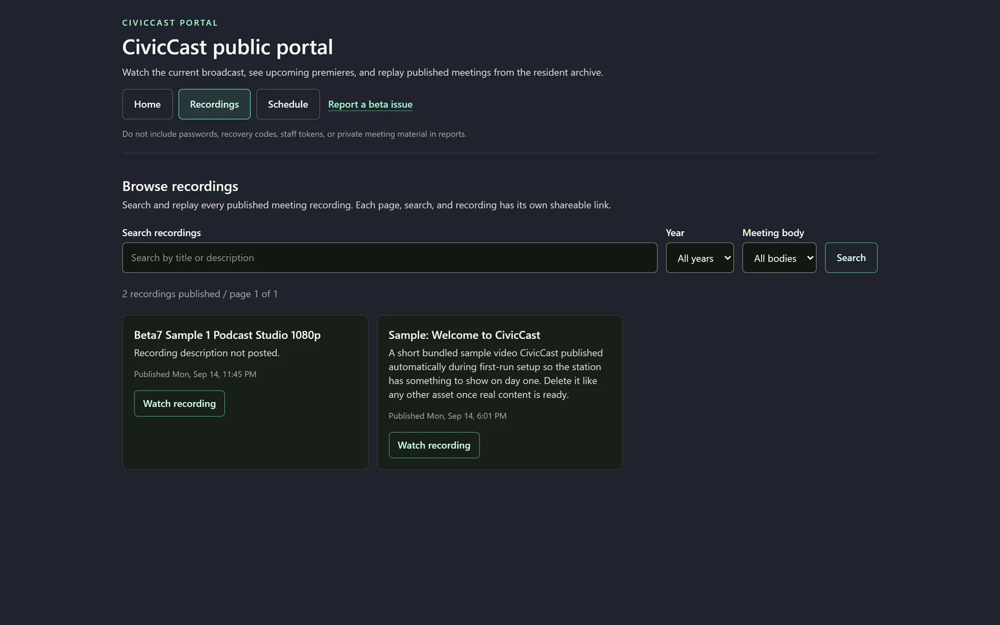
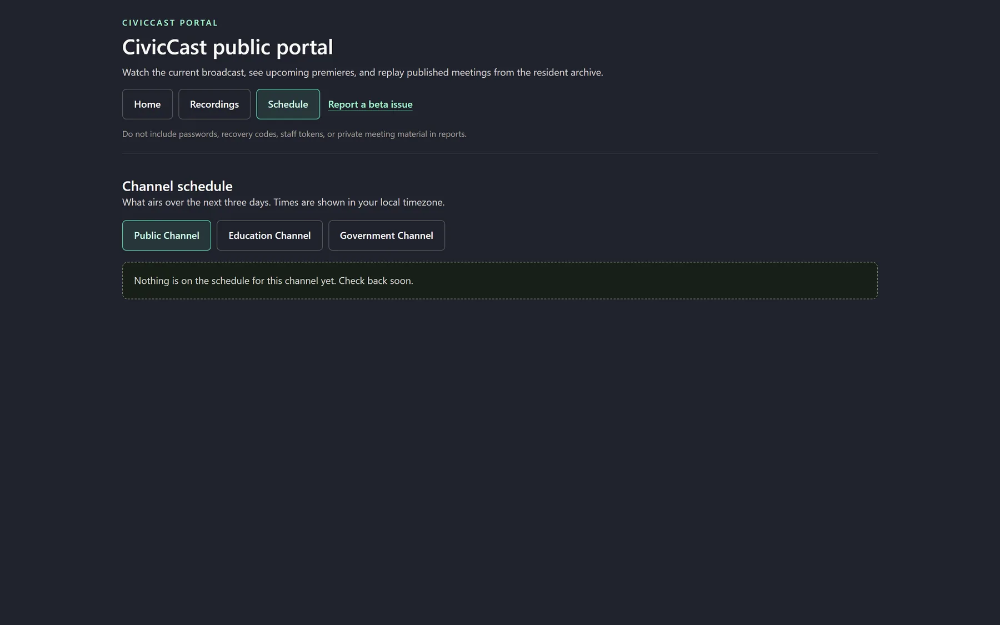
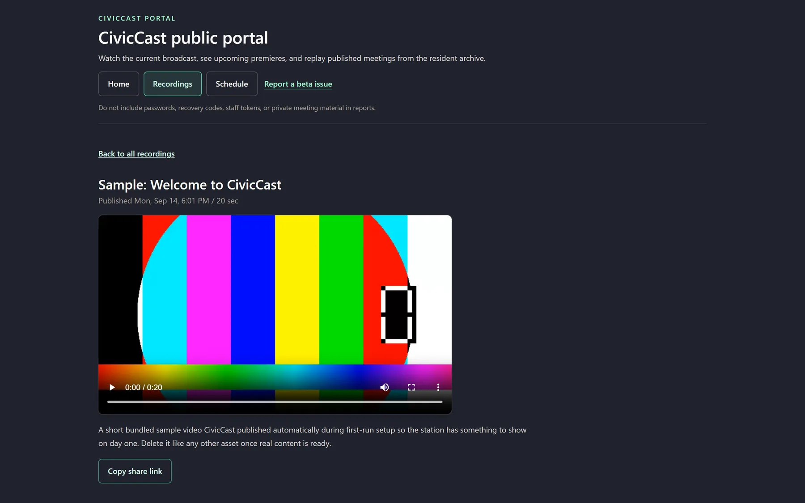
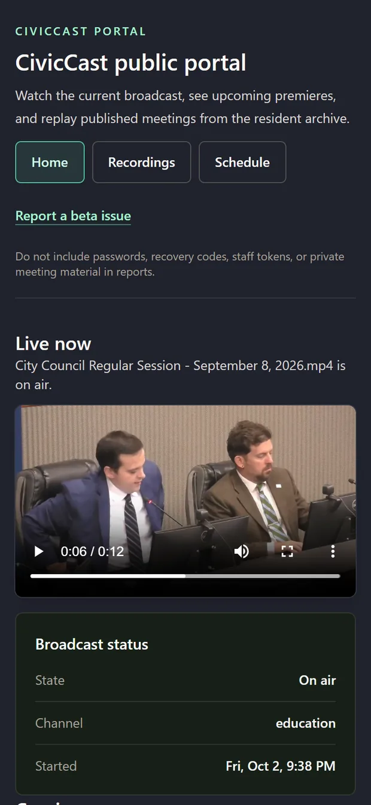
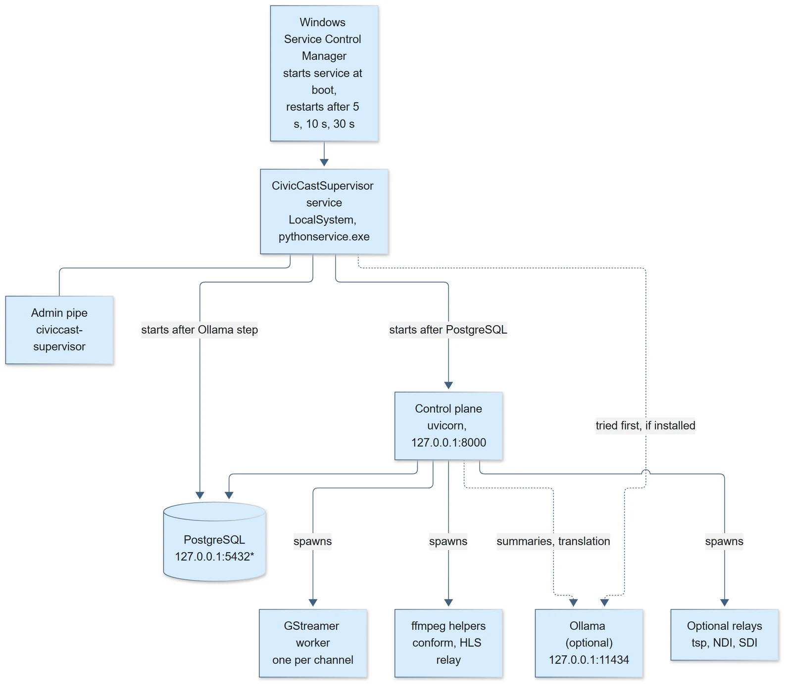

Native Windows station software
Public meetings, on the air.
CivicCast is open-source software for public-access stations and small cities. It schedules your channels and keeps them on the air, records and captions your meetings, and publishes them to a portal where residents can watch. It runs on one Windows PC that you control.

- Open sourceCode under Apache-2.0, documentation under CC BY 4.0.
- One Windows PCInstalls as a Windows service on hardware you own.
- Whistle CPU captionsWhen live captions are enabled, Whistle is the CPU primary; Whisper backs up the affected channel, with optional NVIDIA acceleration for Whisper.
- Free to useLocal captioning without a per-minute service charge.
Why it exists
A meeting should not need five tools to reach residents.
- Camera recorder
- Playout box
- Caption service
- Website upload
- Schedule spreadsheet
One schedule. One library. One resident portal.
CivicCast covers the path a public meeting takes: it is scheduled, aired on a channel, recorded, captioned, checked by a person and published for residents. Staff work in one web console. Residents use a separate public portal. Live Whistle captions run on the station, with Whisper fallback scoped to the affected channel. Summary and translation use local models by default; a setup administrator can opt into Ollama Cloud or OpenRouter for those features.
What it does
The whole path from agenda to archive.
Schedule, broadcast, record, caption, publish and monitor from one staff console.
-
Schedule and air
Three channels- Channels for education, government and public programming, each with its own schedule.
- Premieres, recurring program-guide slots and auto-schedule rules that the station compiles into what airs.
- Automatic program changes keep each channel moving through its schedule.
- Audio leveling targets -16 LUFS for consistent listening levels.
-
Run the meeting
Live controls- A live screen with pre-flight checks before a stream starts.
- Take a live source to air from the Channels screen and return to the schedule afterwards.
- Remote guest camera and microphone controls in configured VDO.Ninja rooms.
-
Record and collect
Media library- Recurring capture schedules for live inputs and network streams, plus Record now.
- Upload recordings, trim them, and import an agenda whose items link to times in the video.
- Residents can submit programs through a form; staff review them in a queue.
-
Caption and review
Local speech recognition- Local speech recognition makes live captions (Whistle primary, with per-channel Whisper fallback) and offline captions for recordings.
- A person reviews and approves caption text before it attaches to a saved recording.
- Review and approve AI summaries with transcript-time citations, then export signed records.
-
Publish to residents
Resident portal- A public portal with Live now, searchable recordings, an upcoming schedule and watch pages with captions and agenda chapters.
- A publish step with approvals, so a recording reaches residents when staff say so.
- Works on a phone as well as a desktop.
-
Deliver and monitor
Station health- Channel outputs as HLS web streams or a UDP transport stream for a cable headend.
- A readiness screen that says whether the station is safe to broadcast, and five staff roles from setup admin to records clerk.
- The Windows service starts and restarts the database, playout workers and caption worker for you.
How it works
One meeting, six steps.
The order is real: each step feeds the next.
Schedule it
Add the meeting to the schedule and the program guide. Import the agenda.
Meeting operatorRun it
Check readiness, go live or let the channel air its program, and watch the output.
Camera operator, meeting operatorRecord it
The recording lands in the asset library, ready to trim and package.
Meeting operatorCaption and check it
Captions are generated on the station. A person reviews them before they attach.
Records clerkPublish it
Approve the publish steps. The recording and its captions appear on the portal.
Publish operatorResidents watch
Residents open the portal, search the archive and watch with captions.
Everyone
Screens
What residents see.
Captured from a lab station running sample content. The staff console is covered screen by screen in the manual.





Architecture
One service, a few well-known parts.
CivicCast runs as a Windows service. Its programs communicate locally, while staff and residents use their web browsers to reach the console and portal.

- SupervisorThe CivicCast Native Supervisor service starts the other programs and restarts them if they stop.
- Web applicationThe staff console, resident portal and documented HTTP API run on the station.
- DatabasePostgreSQL, created and configured by the installer.
- PlayoutOne GStreamer worker per channel, with seamless program changes and a watchdog that ends a stuck change. Outputs are HLS and UDP transport stream.
- Captions and AIWhistle is the CPU primary for live captions; Whisper is the per-channel fallback and handles recorded-media captions, with optional NVIDIA CUDA. A local Ollama runtime provides summaries.
- Verified installationThe installer is Authenticode-signed. Setup verifies component-pack signatures and file hashes.
Runtime results
Beta 11: 72 hours across three channels.
A Beta 11 CivicCast host ran public, government and education programming together for 72 hours, recording 99.78% live caption-input coverage.
| Measure | Result | Run |
|---|---|---|
| Channels running together | 3: public, government and education | Beta 11, 72-hour host run |
| Live caption-input coverage | 99.78% | Beta 11, three-channel, 72-hour run |
| Continuous station runtime | 72 hours without a service restart | Beta 11 host run |
| Scheduled health observations | 216 of 216 healthy checkpoints | Beta 11 host run |
The Beta 11 72-hour host report gives the channel totals and measurement. The earlier 48-hour report preserves the preceding window's 99.88% result. Current package checks are in the Beta 19 verification record.
The separate Beta 15 R9 field evaluation later sampled slate during scheduled speech and did not establish useful three-channel live captions. The cause was unconfirmed; the report does not attribute the result to Whistle. See the owner-deferred follow-up record for the Beta 15 findings and their evidence boundaries.
Current release
Built for daily station operation.
Beta 19 brings on-air remote guests, bulletin-board video and audio, and native viewer apps to the guided Cablecast station import, subscriber delivery, Podcast publication and underwriting tools introduced in Beta 17 and 18.
Get the complete signed package from the release links below. See the roadmap and the package verification record for details.
Quick start
Install it on a Windows PC.
- Get the kitThe Beta 19 release page carries
setup.exe, five.ccpackcomponent packs, and the signed station-model bundle. The release helper verifies and prepares the complete kit. Chapter 10 of the manual explains the folder layout. - Run
setup.exeWindows asks for administrator approval. Setup checks every pack, creates the database, runs a self-test and starts the CivicCast service. - Open the operator consoleUse the CivicCast Operator Console shortcut on the PC, which opens
http://127.0.0.1:8000/operator/. First setup only works from the station computer itself. - Create the first adminChoose the station name and an admin password, and save the recovery kit. The console stays locked until you confirm it.
- Check ReadinessThe Readiness screen reports whether the station is safe to broadcast.
Upgrading an existing station? Back up a working station and plan the interruption. Follow the Windows installation guide for the exact release-matched kit and procedure.
Documentation
A manual for each kind of reader.
The User Manual has a plain-language part for volunteers, camera operators, editors, records clerks and station staff, and a technical part for a city's IT staff, with architecture diagrams and a full appendix.
Get the Beta 19 PDF and Word manuals from the release page. The manual includes everyday operating instructions, technical administration and architecture diagrams.
- User Manual (PDF)The complete manual, formatted for reading and printing.
- User Manual (Word)The same manual as an editable document.
- User Manual (Markdown)The source text, readable in the browser.
- Beta.19 release assetsSigned installer, runtime packs, station models and manuals.
- Beta.19 verificationPackage identity and scoped checks.
- Beta.14 historical verificationEarlier package identity and installation evidence.
- Beta.12 historical verificationPackage-specific evidence from the previous release.
- Windows install notesThe release status and what a first install needs.
- ChangelogWhat changed in each release.
- ContributingHow to propose a change to the code or the docs.
- Security policyHow to report a vulnerability.
- Report a beta issueUse a GitHub account. Leave out passwords, recovery codes and private meeting material.
Release and field evidence
Beta 19 is the current published download.
The signed v1.0.0-beta.19 release completes Sprint 5 with remote guest output, bulletin-board media and native viewer apps. Its verification record identifies the package and its scoped checks.
Historical Beta 11 evidence remains separate: 72 hours across three channels with 99.78% live caption-input coverage. See the Beta 11 host report; it does not qualify later packages.
Bring your station together.
Download the signed pre-release, set up your channels and explore the operator console. Share your experience to help shape the next release.